SAE-Diplom in Games Programming. Seit Dezember 2025 entwickle ich in Vollzeit Aurion, ein MMORPG mit prozedural generierten Welten, drei Klassen (weitere geplant), eigenem Kampf- und Talentsystem und einer kompletten Spiel-UI.
SAE diploma in Games Programming. Since December 2025 I have been developing Aurion full-time: an MMORPG with procedurally generated worlds, three classes (more planned), its own combat and talent systems and a complete game UI.
Ein MMORPG mit Expeditionen in prozedural generierte Welten, gemeinsam in der Gruppe oder allein. Jeder Run baut eine neue Welt, der Kampf ist schnell und lesbar, und die Stadt dient als Basis mit Händlern, Quests, eigenem Haus und Gilde.
An MMORPG with expeditions into procedurally generated worlds, in a group or solo. Every run builds a new world, combat is fast and readable, and the city is your base with merchants, quests, your own house and a guild.
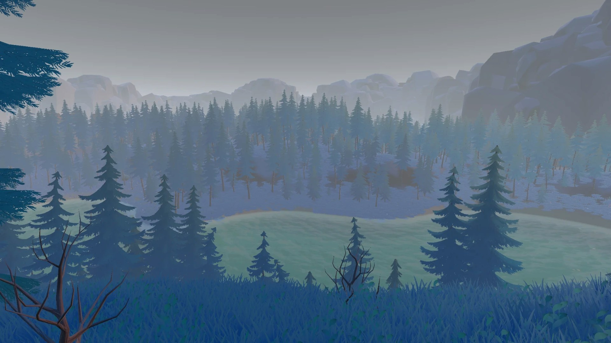
Aus einem einzigen Seed entsteht eine komplette Welt: Biome mit weichen Übergängen, Flüsse und Seen, Hochebenen mit Rampen und ein Wegenetz.
A single seed produces a complete world: biomes with soft borders, rivers and lakes, plateaus with ramps and a road network.
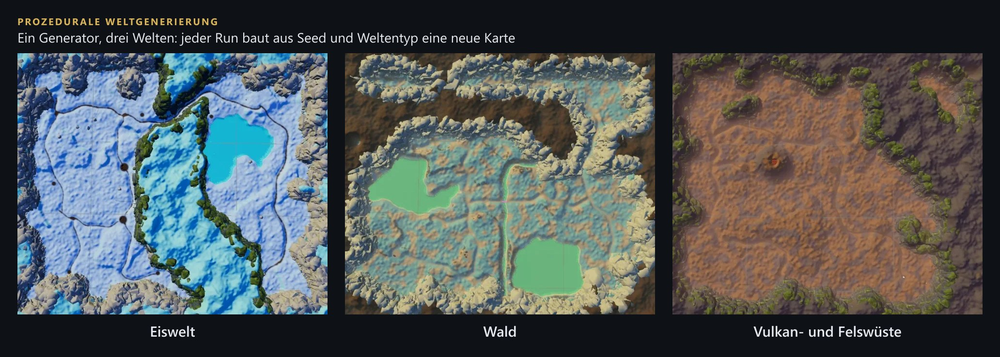
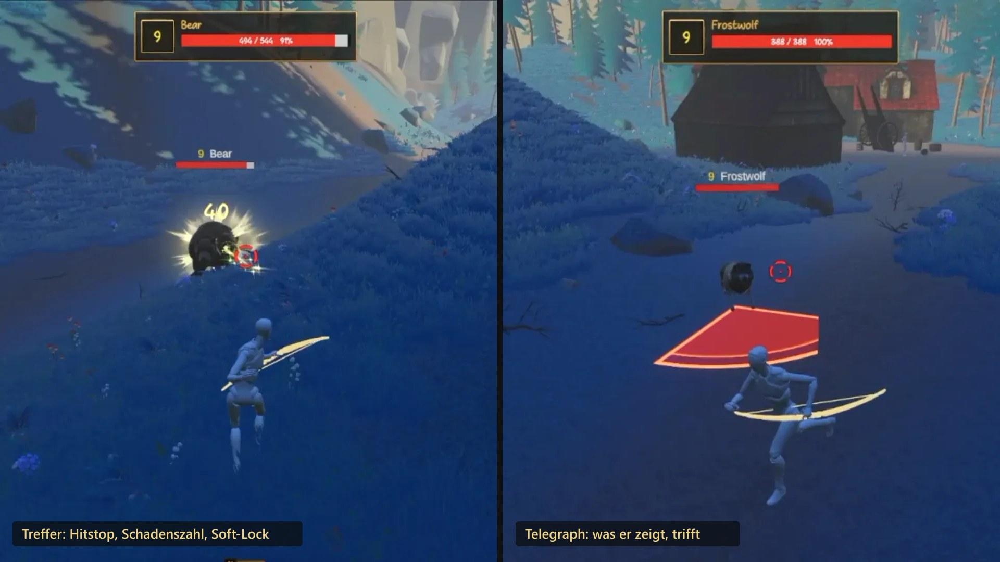
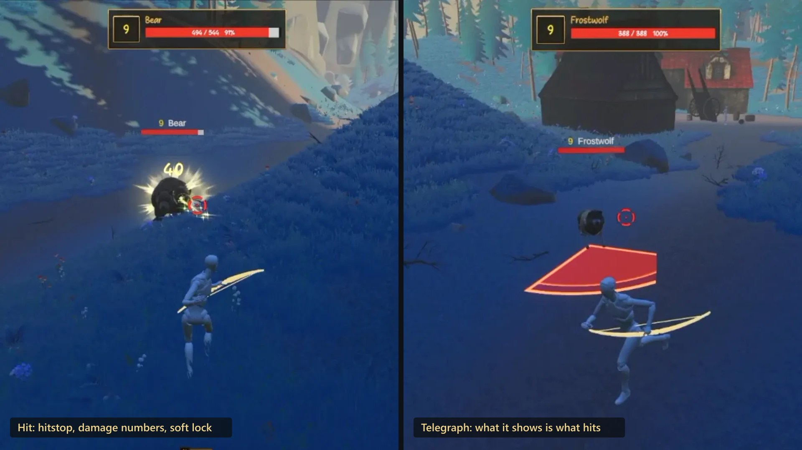
Spieler und Gegner nutzen dieselben Ability-Komponenten. Der einzige Unterschied ist, wer sie steuert: die Eingabe des Spielers oder die Gegner-KI.
Players and enemies use the same ability components. The only difference is who drives them: player input or enemy AI.
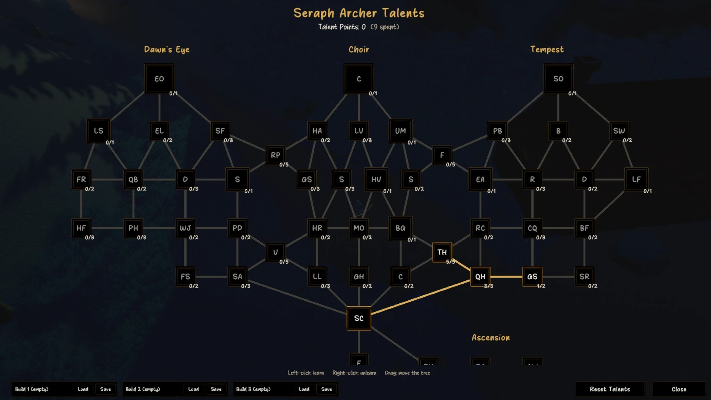
Ein Pfad-Baum pro Klasse, ein Punkt pro Level. Aktuell gibt es drei Klassen, weitere sind geplant. Talente ändern nie, wie ein Skill aussieht, sondern nur Zahlen, Bedingungen und Zusatzeffekte.
One path tree per class, one point per level. There are three classes right now, more are planned. Talents never change how a skill looks, only numbers, conditions and extra effects.
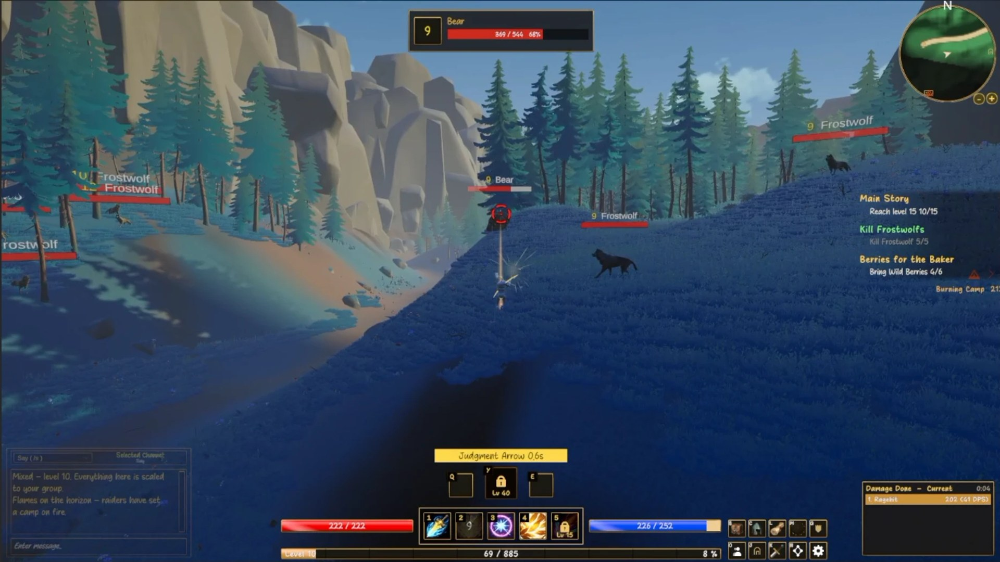
HUD, Inventar, Charakter, Quest-Log, Weltkarte, Händler, Auktionshaus, Talente und Optionen. Alles in einem einheitlichen Stil und nach festen Regeln.
HUD, inventory, character, quest log, world map, merchants, auction house, talents and options. All in one consistent style and built on fixed rules.
Projekte aus meiner Zeit am SAE Institute Berlin und eigene kleinere Spiele, Modelle teils aus Asset-Paketen.
Projects from my time at SAE Institute Berlin and my own smaller games, models partly from asset packs.
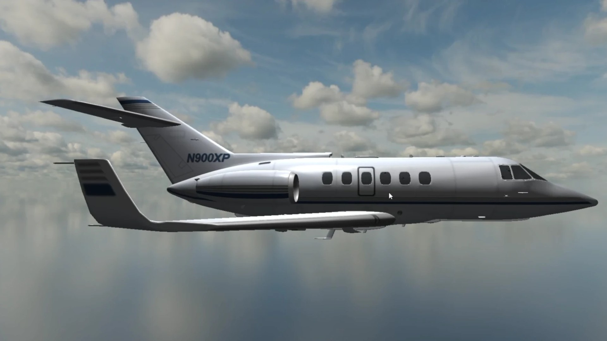
Windows-Programm, das ein 3D-Flugzeugmodell in einer selbst gebauten Skybox aus einer Cube-Map-Textur zeigt. Die Kamera wechselt zwischen mehreren Perspektiven.
A Windows program that shows a 3D aircraft model inside a self-built skybox made from a cube map texture. The camera switches between several perspectives.
C++ · OpenGL Video ansehen →Watch video →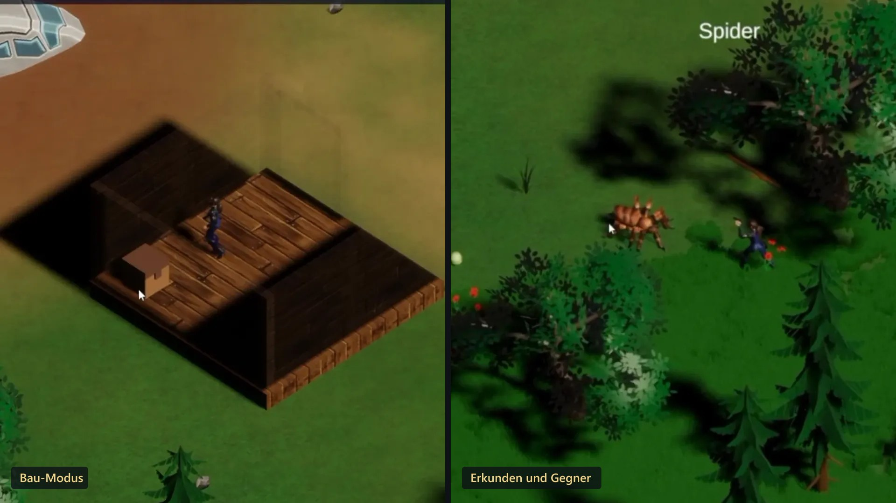
Survival-Spiel in Draufsicht: Bau-Modus zum Platzieren, Drehen und Abreißen von Bauteilen, Ressourcen und Hotbar, Tag-Nacht-Zyklus, Minimap, Gegner und ein Pausenmenü mit Weltkarte.
A top-down survival game: build mode for placing, rotating and demolishing pieces, resources and a hotbar, a day-night cycle, minimap, enemies and a pause menu with a world map.
Unity · C# Video ansehen →Watch video →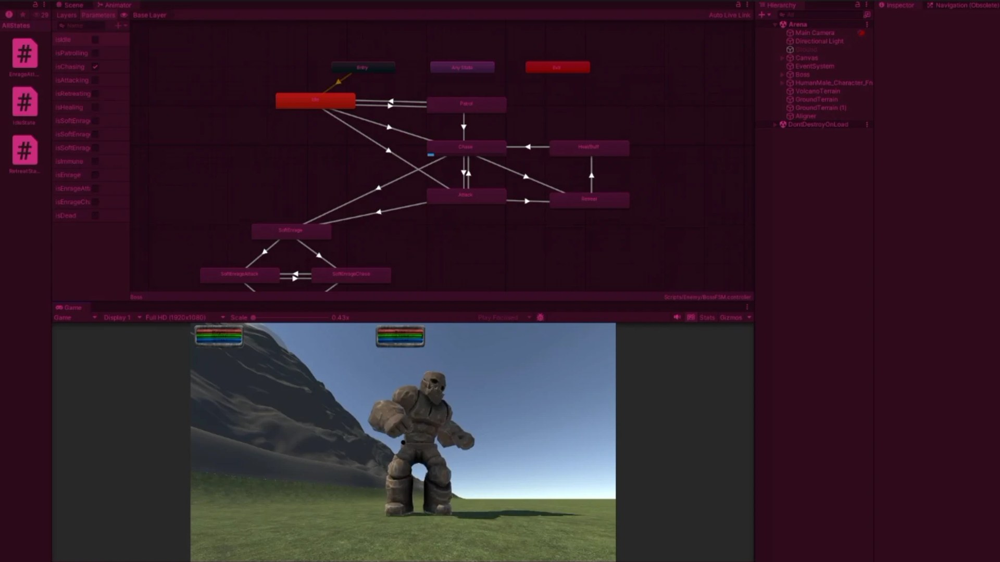
Boss-KI als State Machine über den Animator: Patrouille, Verfolgen, Angriff, Rückzug, Heilen und eine Enrage-Phase mit eigenen Angriffs- und Verfolgungs-Zuständen.
Boss AI as a state machine in the Animator: patrol, chase, attack, retreat, heal and an enrage phase with its own attack and chase states.
Unity · C# · State Machine Video ansehen →Watch video →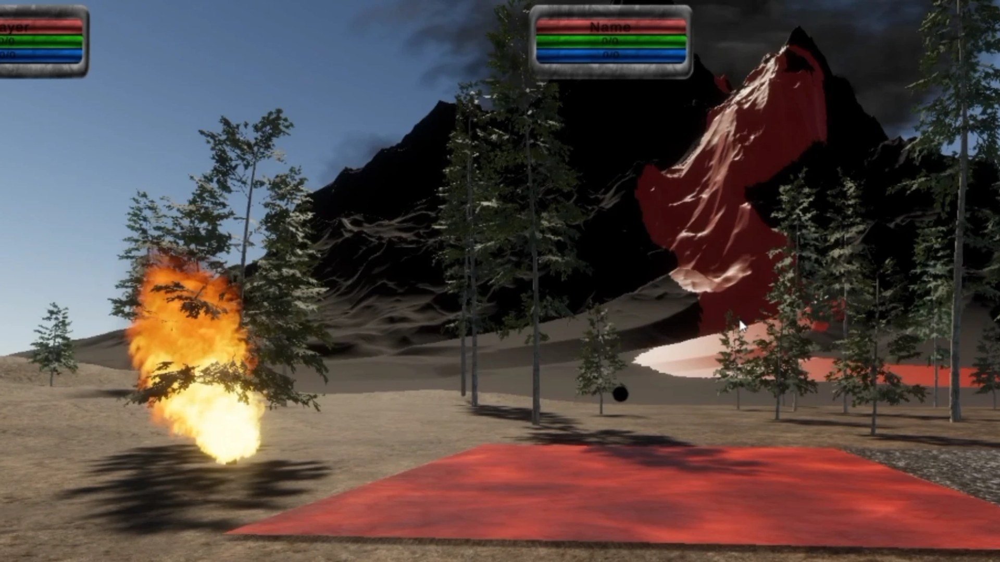
Selbst geschriebene Shader, unter anderem für Lava, und Partikelsysteme für Rauch und Feuer in einer Vulkanlandschaft.
Self-written shaders, among them one for lava, and particle systems for smoke and fire in a volcanic landscape.
Unity · Shader · PartikelParticles Video ansehen →Watch video →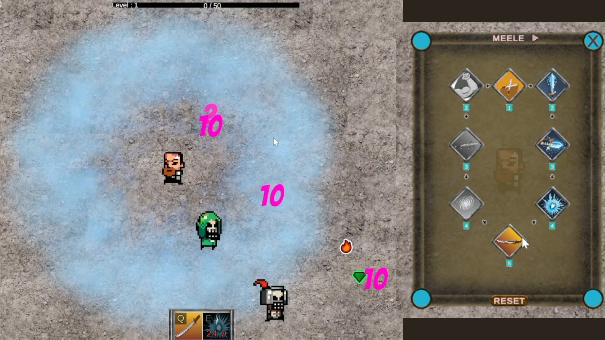
Spiel im Stil von Vampire Survivors mit einem Skill-Baum pro Waffenart, Fähigkeiten auf Q und E mit Abklingzeit und einem Levelsystem.
A game in the style of Vampire Survivors with a skill tree per weapon type, abilities on Q and E with cooldowns and a level system.
Unity · C# Video ansehen →Watch video →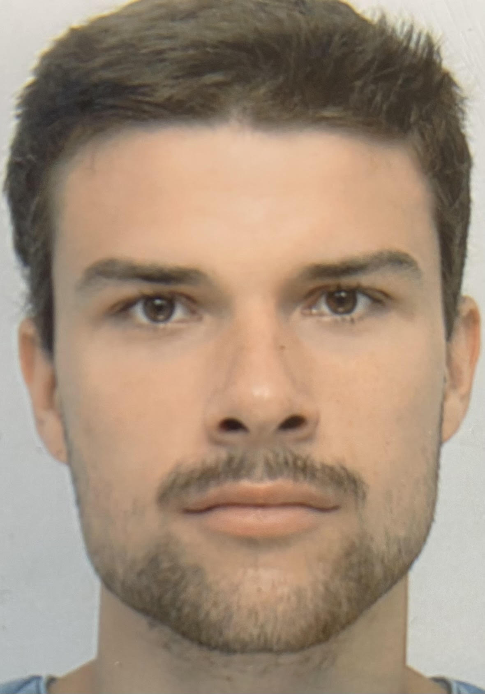
Mich reizt an der Spieleentwicklung die Verbindung aus technischem Verständnis und Kreativität und die Vorstellung, etwas zu bauen, das anderen Freude macht. Vor dem Studium habe ich mehrere Jahre eigene Hardware und Server aufgebaut und betrieben. Daher kommt mein Blick für Systeme, die zuverlässig laufen müssen.
What draws me to game development is the mix of technical understanding and creativity, and the idea of building something that brings other people joy. Before my studies I spent several years building and running my own hardware and servers. That is where my eye for systems that have to run reliably comes from.
Mein Ziel ist der Einstieg als Junior Game Programmer, am liebsten mit Unity und C#. Genauso offen bin ich für einen Einstieg in der Softwareentwicklung oder im IT-Support. Langfristig möchte ich Aurion auf Steam veröffentlichen.
My goal is to start as a junior game programmer, ideally with Unity and C#. I'm just as open to starting in software development or IT support. In the long run I want to release Aurion on Steam.